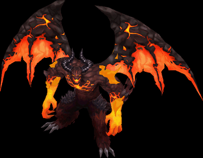

エリアボス
[重要！] 2021/09に仕様変更が入りました。
最新の仕様はこちら
エリアボスとは
シュラグ(BF)
ファルコン(デフヒ)
ゲリオ(グレートマウンテン)
エリアボスとは
パーティーでの討伐を前提とした新しい形のインスタンスダンジョンです。挑戦にはポータル系アイテム(※プチポタ[1時間版]も可)か
特定のマップNPC「討伐騎士団長」より専用のクエストを受諾し、
報酬として配布される、「討伐許可証」の入手が必要になります。
「討伐許可証」はクエスト1回につき1枚入手できます。スタック10個まで。

入場条件
レベル900以上。2人以上のパーティーで挑戦。討伐は1キャラにつき、1日1回までクリア可能。
※ヤティカヌのエリアボスは別カウントです。
※討伐できなかった場合は再入場可能ですが、討伐許可証を消費します。
難易度
入場後にNPCと会話することで4段階の難易度(初級/中級/上級/超級)を選択できます。推奨人数は(2/4/6/8)人です。
鯖落ちの扱いは秘密ダンジョンと同様です。
※入場及び難易度の選択はパーティーリーダーのみが行えます。
報酬
(1)エリアボス装飾品 (1/2/3/4個)(2)トレジャーボックス(下級/中級/上級/最上級) 1個
装飾品を一定数集めることで、NPC「討伐騎士団長」から「討伐バッジ」などと交換可能です。
※各種トレジャーボックスはどの難易度でも獲得は可能ですが、
挑戦した難易度と同等のトレジャーボックスが必ずしも獲得できるとは限りません。
※討伐バッジの例
 ※同じ討伐バッジを同時に所有することが出来ますが、高い効果が優先されて適用されます。
※同じ討伐バッジを同時に所有することが出来ますが、高い効果が優先されて適用されます。| 画像 | 戦利品ボックスの等級 | 購入に必要なトークン |
|---|---|---|
 |
戦利品ボックス[一般] | 3個 |
 |
戦利品ボックス[中級] | 10個 |
| 戦利品ボックス[上級] | 25個 | |
| 戦利品ボックス[最上級] | 50個 |
戦利品ボックスから入手可能なアイテム一覧
シュラグ(希望と絶望の境目)

荒野の要塞入口より入場可能な希望と絶望の境目より挑戦できます。
「討伐騎士団長」(座標52.11)よりクエスト[ブラックファイヤー討伐 - 実力の証明]を受託して、希望と絶望の境目の対象モンスターを30匹狩ります。
※対象モンスターはHP200万程度あるボスモンスターで、[汚染ガーゴイル、汚染ヘルハウンド、汚染サラマンダー]など。
※モンスターのレベルは920～935
※限界突破5クエストの最後で必要な「ひび割れた邪念」を低確率で入手可能。(夢のカケラを150個渡した後のみドロップ)
討伐バッジ
 ブラックファイヤー ブラックファイヤー討伐バッジ |
 シュラグの角 シュラグの角 |
交換に必要な材料 | 効果 |
|---|---|---|---|
| 1段階 | 10個 | - |
最終ダメージ +1% すべてのスキルレベル +1 |
| 2段階 | 60個 | 1段階バッジ ＋シュラグの角 50個 |
最終ダメージ +2% すべてのスキルレベル +2 |
| 3段階 | 150個 | 2段階バッジ ＋シュラグの角 90個 |
最終ダメージ +3% すべてのスキルレベル +4 PVP攻撃力 +2% PVP防御力 +2% |
参考動画
ファルコン(埋没した古代遺跡)

乾いたオアシスより入場可能な埋没した古代遺跡より挑戦できます。
「討伐騎士団長」(座標10.15)よりクエスト[デフヒルズ討伐 - 実力の証明]を受託して、埋没した古代遺跡の対象モンスターを30匹狩ります。
※対象モンスターはHP200万程度あるボスモンスターで、[古代フロッグ、オアシスタートル、ボーンキメラ、シーク守護者、古代悪魔、古代の有翼猿]など。
※モンスターのレベルは935～950
※限界突破5クエストの最後で必要な「ひび割れた邪念」を低確率で入手可能。(夢のカケラを150個渡した後のみドロップ)
討伐バッジ
 デフヒルズ デフヒルズ討伐バッジ |
ファルコンの 翼装飾 |
交換に必要な材料 | 効果 |
|---|---|---|---|
| 1段階 | 10個 | - |
すべてのスキルレベル +3 PVP攻撃力 +1% PVP防御力 +1% |
| 2段階 | 60個 | 1段階バッジ ＋ファルコンの翼装飾 50個 |
すべてのスキルレベル +5 PVP攻撃力 +2% PVP防御力 +2% |
| 3段階 | 150個 | 2段階バッジ ＋ファルコンの翼装飾 90個 |
すべてのスキルレベル +7 PVP攻撃力 +3% PVP防御力 +3% |
ゲリオ(グレートマウンテン)
神獣の野原の「クリド」(座標9,41)から挑戦できます。
「ゲリオ」を討伐することで、「グレードマウンテン討伐バッジ」を獲得できます。
最上位の「超級」を攻略すると称号「翼を折った者」を獲得できます。
称号を使用すると、特別なエフェクトが表示されます。（能力上昇効果等はありません）
「ゲリオ」を討伐するには、専用の前提クエストを完了させる必要があります。
[関連]ゲリオ前提クエスト「異様な力のオーラを調査」
マップ名「冒険家協会スマグ支部/スマグ旅館」 対象NPC：「支部長ランベル」(座標36,27)
2人以上で入場可能ですが、全員が前提クエストを完了している必要があります。
1回入場するごとに：「クリドの魔力」、またはポータル系アイテムを所持している必要があります。
※クリア時に限界突破5クエストの最後で必要な「ひび割れた邪念」を低確率で入手可能です。
討伐バッジ
| グレートマウンテン 討伐バッジ |
 ゲリオの ゲリオの鎧の破片 |
交換に必要な材料 | 効果 |
|---|---|---|---|
| 1段階 | 10個 | - |
最終ダメージ +2% 全ての能力値 +20 (ペット、召喚獣)攻撃速度 +10% |
| 2段階 | 60個 | 1段階バッジ ＋ゲリオの鎧の破片 50個 |
最終ダメージ +4% 全ての能力値 +35 (ペット、召喚獣)攻撃速度 +15% |
| 3段階 | 150個 | 2段階バッジ ＋ゲリオの鎧の破片 90個 |
最終ダメージ +6% 全ての能力値 +50 (ペット、召喚獣)攻撃速度 +20% |